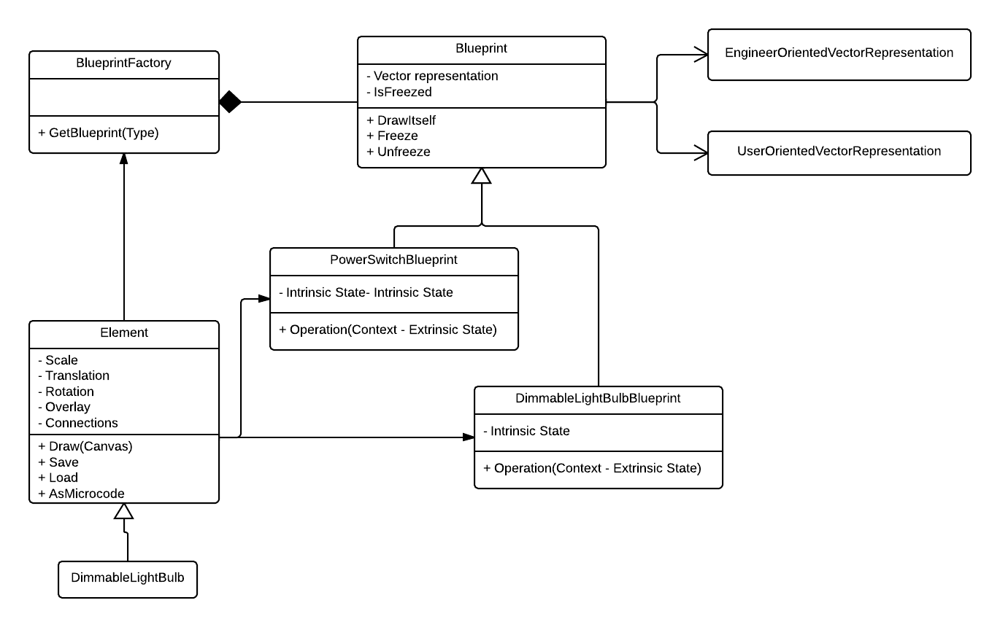

Flyweight
Flyweight definiuje strukturę dla współdzielonego obiektu, który może być użyty i swobodnie współdzielony równocześnie w wielu kontekstach.
Pozwala wielu klientom korzystać z jednego obiektu.
Wspólny dostęp do obiektu przydaje się między innymi wtedy, gdy zachodzi potrzeba zarządzania tysiącami czy wręcz dziesiątkami tysięcy drobnych obiektów, na przykład znaków w internetowej wersji książki.
UML

Dlaczego stosujemy?
- Wydajność pamięciowa
- Konsekwencja=jednolitość
- Swobodne współdzielenie
Warunki Gdy ma sens
i wdrażanie w realnym projekcie:
- aplikacja używa bardzo dużej ilości podobnych obiektów
- koszt pamięciowy tych obiektów jest duży
- obiekty są tworzone i usuwane co wywiera nacisk na GC
- duży kawałek tych obiektów może być wyniesiony do zewnętrznego kontekstu
- kiedy już to się stanie to możemy wprowadzić niewielką liczbę współdzielonych niezmiennych obiektów w miejsce tej dużej ilości
- aplikacja nie polega na tożsamości obiektów (wprowadzamy tak naprawdę Value Objects)
- obiekty muszą być totalnie niezależne od kontekstu
- jakakolwiek zmiana musi być od razu widoczna dla wszystkich klientów
Konsekwencje/Wady
- zwiększona potrzeba obliczeń (stan zewnętrzny)
- nie może być wymaganej tożsamości obiektów
- jeśli są kłopoty z wyznaczeniem części zewnętrznej/kontekstu to może się zdarzyć, że nadal będziemy wymagać sporej ilości obiektów
- obiekty nie mogą odwoływać się do swoich rodziców/hostów
- jakikolwiek kontekst musi być przekazywany do Flyweight
- należy być czujnym w sprawach wielowątkowych, które z reguły mają miejsce
Typowe zastosowanie:
- String interning
- Znaki w dokumencie (glyphs)
- Grafika w grach (np. przeciwnicy)
